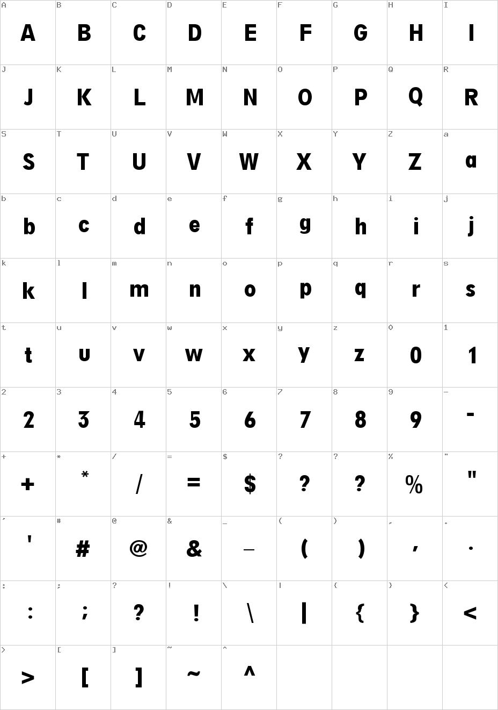

Home
SF MOMA
Digi Grotesk
Designed by Hell Design Studio in 1968
About Digi Grotesk
Despite its derivative appearance—it looks like a condensed knock-off of Neuzeit Book from Stempel—Digi-Grotesk S is significant because it was considered the first digital typeface. Digi Grotesk wasn’t exactly intended for display on computer screens, which didn’t exist as we know them in 1968. Instead, it was designed for use in Hell’s pioneering cathode ray typesetting machines, which set text by projecting a CRT image — basically a TV image — onto photosensitive paper through a lens.
OCR A 60pt
The quick brown fox jumps over the lazy dog
OCR A 45pt
The quick brown fox jumps over the lazy dog
OCR A 24pt
The quick brown fox jumps over the lazy dog
OCR A 14pt
The quick brown fox jumps over the lazy dog
OCR A 9pt
The quick brown fox jumps over the lazy dog
